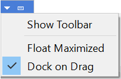
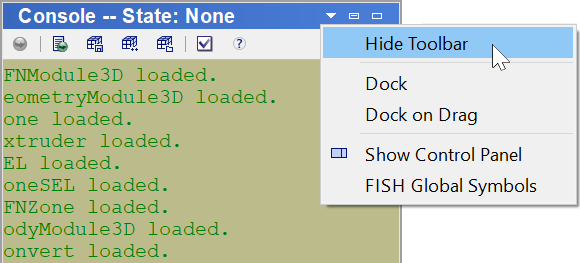

窗格菜单与选项卡菜单
窗格菜单（  ）便于独立于主窗口操作窗格——尤其是在窗格当前处于浮动（floated）状态时。
）便于独立于主窗口操作窗格——尤其是在窗格当前处于浮动（floated）状态时。
停靠状态下的窗格菜单
停靠时，所有窗格类型的窗格菜单都是相同的。


图 1：停靠窗格的窗格菜单。
- ：第一个菜单选项是一个切换项，它使主工具栏的副本显示/隐藏在窗格内、标题栏正下方（该选项的文字会变为与工具栏当前显示状态相反的选项）。
- ：此位置上的选项是一个切换项，可在自动浮动并最大化窗格（如果当前处于停靠状态）与将窗格停靠到其原始位置（如果当前处于浮动状态）之间切换。
- ：这是一个切换选项，当设置为“关”（未勾选）时，会使该窗格不可停靠——这意味着从停靠位置进行的任何移动都会使其浮动，并且从浮动状态重新停靠它变得不可能。
浮动状态下的窗格菜单
当窗格浮动时，情况会变得更复杂、更多变。


图 2：浮动的i 控制台（Console）窗格的窗格菜单。
在示例图片中，前三个选项与上述选项相同，不过在此情况下，由于上下文或当前设置不同，每个切换项的状态都与停靠窗格图片中的状态相反。鼠标即将选择“隐藏工具栏”——从可见的窗格局部可以看到，工具栏当前正在显示。下一个选项“停靠”也与当前窗格设置相符。而“拖动时停靠”选项已被设为关，这意味着只有选择“停靠”选项才能重新停靠该窗格。
- ：切换设置控制面板在浮动窗格内显示/隐藏。
在浮动窗格内显示时，控制面板的各个控制集可通过窗格菜单来指定（例如，在上图中为“FISH 全局符号”项）。也可通过窗格工具栏上的“显示或隐藏控制集”按钮（  ）实现——其行为与位于主工具栏上时（when on the main toolbar）完全相同（上图中看不到该按钮，因为它位于已打开的窗格菜单下方）。不过，如果工具栏没有在窗格中显示，则无法通过该按钮显示控制集，此时在控制面板中显示/隐藏控制集的唯一方法是使用窗格菜单。菜单上列出的控制集将随浮动窗格的类型而不同。
）实现——其行为与位于主工具栏上时（when on the main toolbar）完全相同（上图中看不到该按钮，因为它位于已打开的窗格菜单下方）。不过，如果工具栏没有在窗格中显示，则无法通过该按钮显示控制集，此时在控制面板中显示/隐藏控制集的唯一方法是使用窗格菜单。菜单上列出的控制集将随浮动窗格的类型而不同。
选项卡菜单
当窗格堆叠（stacked）在选项卡组中时，在窗格的选项卡上单击右键也会打开一个选项菜单。菜单上项的具体列表取决于窗格的类型。下面列出了所有可能的选项，并标注了哪些窗格类型会提供该选项。
- ：隐藏当前窗格。所有窗格类型均可用。
- ：关闭当前窗格。所有可关闭的（that can be closed）类型均可用。
- ：浮动当前窗格。所有窗格类型均可用。
- ：如果该窗格是包含绘图的视图窗格，此选项将打开一个简单的对话框，允许重命名当前窗格。如果该窗格是包含数据文件的编辑窗格，则会打开对话框，允许重命名/重定位当前数据文件。此选项仅对视图和编辑器窗格可用。
| 这些内容对您有帮助吗？… | FLAC3D © 2019, Itasca | 原文更新于 2020 年 10 月 8 日 |